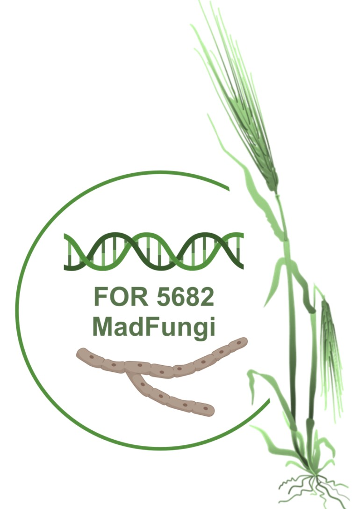

Our Research
Plant immunity involves complex physiological processes that allow
plants to recognize, respond to, and defend against various pathogens.
These physiological processes encompass a range of interactions and
responses at the cellular and molecular levels.
Our Lab is particularly interested in:
the cellular recognition events by cell-surface
localised and intracellular receptor proteins.
signal transduction pathways connecting
receptor-mediated recognition events with downstream (defence)
signalling.
plant host defence strategies.
RECOGNITION - SIGNAL TRANSDUCTION – DEFENCE
Dicots vs. Monocots
Whilst research on model plants provides us with important principles in
molecular plant sciences, comparatively little is known about
fundamental differences between dicots and monocots.
We make use of the interaction between barley (Hordeum vulgare)
and the barley powdery mildew fungus Blumeria hordei
(Bh) to understand the physiological plant processes that a
plant host-associated microbe manipulates for infection. To unravel
overlaps and differences between the physiological processes in monocot
and dicot immunity, we also study the interaction between
Arabidopsis thaliana and the dicot-infecting mildew fungus
Golovinomyces orontii and include other bacterial and fungal
microbes that interact with both, mono- and dicotyledonous plants.
Here some examples of our ongoing
projects:
Emmy Noether Project
Quantification of virulence function and identification of
key residues
Here we quantify the virulence function of isolated Bh
avirulence (AVRA) effectors and their naturally
occurring variants that have lost avirulence
(AVRA-V). For this, we measure the contribution of
the avirulent & of the virulent effectors on the rate of Bh
proliferation. We also aim to identify artificial virulence phentoypes
by determining if the (AVRA) effectors affect
growth of other pathogens and in other plant species. This will clarify
whether the avirulence and virulence functions of effectors are
dependent/independent of one another, whether the loss of avirulence
function is also accompanied by a loss of virulence function and whether
effector functions are conserved between plant species.
CEPLAS & EN Project
Identification of intrinsic functions of effectors from
cereal infecting fungal pathogens
The assignment of biological functions to patogen effectors is of chief
importance for understanding barley powdery mildew disease development.
We biochemically identifiy Bh AVRA
effector targets in barley host cells. For this, we apply
state-of-the-art proximity-dependent protein labeling techniques to
identify the in situ interaction characteristics of
AVRA effectors to facilitate the identification of
the biochemical process in which AVRA host targets
participate.
SFB1403 Project
Identification of the host cell death pathways affected in
the presence of Bh AVRA
effectors
As an obligate biotroph, Bh relies on living host tissue for
proliferation. The inhibition of host cell death is therefore of utmost
importance for the proliferation of Bh (Saur et al., 2021, Saur
& Hückelhoven 2021). Because the MLAs recognise effectors from
multiple unrelated pathogens with biotrophic lifestyles, the by
MLA-recognised AVRA effectors are strong
candidates for directly and/or indirectly inhibiting barley cell death
to allow Bh proliferation. To test this, we investigate the
suppressive effect of the AVRA and related
virulence effectors on a variety of cell death pathways in barley.
For5682 Project
Part of the NEWLY FUNDED RESEARCH UNIT ‘MadFungi’: How do
primary infections and the infection-associated manipulations of the
barley host plant affect the colonization by other microbes

In this project we study how Bh affects the barley colonization
by other microbes, both directly by microbial antagonisms and indirectly
by inducing physiological changes within the barley host plant. We focus
on microbes of the barley microbiota and dominant invaders with both,
biotrophic and necrotrophic lifestyles.
© Isabel Saur